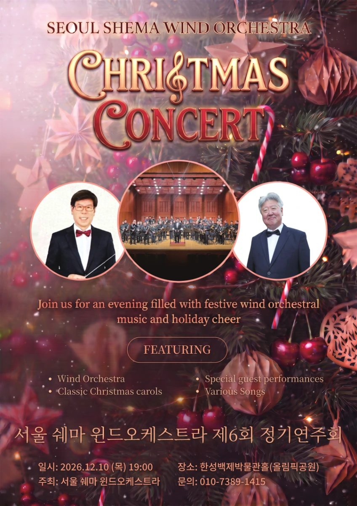
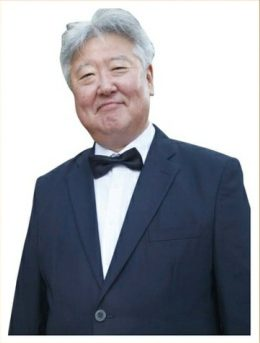
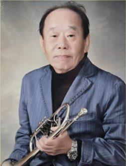
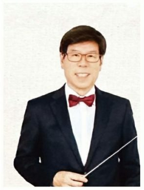
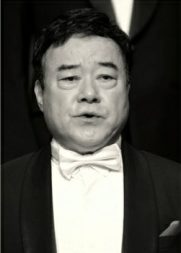
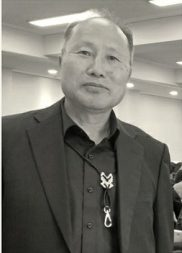
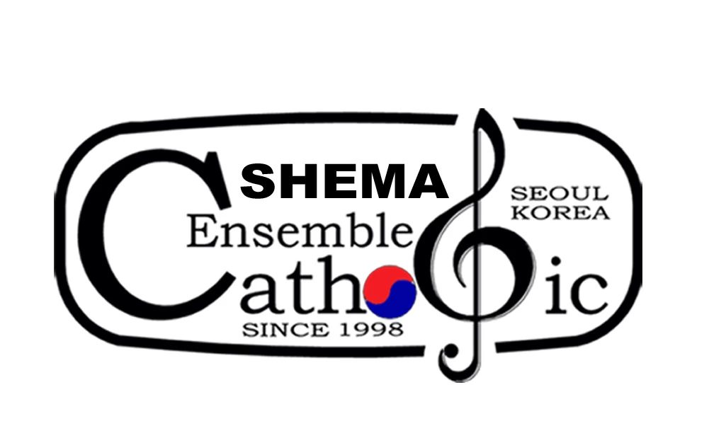

2026년도 어느덧 저물어 가는 12월, 서울 쉐마 윈드 오케스트라가 10여년 만에 정기연주회로 여러분을 모시게 되었습니다.
그동안 코로나 등 내외부의 영향으로 오랜 시간 공백을 보냈지만, 크고 작은 연주 활동을 하여 가며 틈틈이 정기연주회를 위하여 단원들이 굵은 땀방울을 흘려 가며 준비하였습니다.
그 결실을 오늘 여러분들께 보여 드리려고 합니다. 잔잔한 감동과 위로가 되는 연주가 되기를 소망하며, 그 기운이 다가오는 새해 좋은 자양분이 되기를 기원합니다.
끝으로 정기연주회를 위하여 노력하여 주신 지휘자 선생님과 모든 단원님들께 감사드리며, 이 자리가 소중한 추억으로 남기를 기원합니다.
2026. 12. 10.
서울 쉐마 윈드 오케스트라 단장 박영순

1996년 봄, 천주교 둔촌동성당 체칠리아성가단 소속으로 세 명의 소규모 관악앙상블로 출발한 서울 쉐마 윈드 오케스트라가 창단 30년을 맞이하여 여섯 번째 정기연주회를 하게 된 것은 우리나라 아마추어 음악문화에 뜻깊은 활약이라 자부합니다.
한편 생각하면 전문단체의 활동보다도 음악문화의 저력은 비전공자의 활발한 움직임이 더 중요하다고 주장하고 싶습니다. 여러분들의 적극적인 응원 부탁드립니다.
서울 쉐마 윈드 오케스트라 창단자 서진우



곡 이름을 누르면 곡 설명이 나와요
연습실 서울 강동구 양재대로 1371
둔촌빌딩 4층 (5호선 둔촌동역 4번 출구, 걸어서 1분)
연습일 매달 첫째·셋째 토요일 오후 4시~6시
